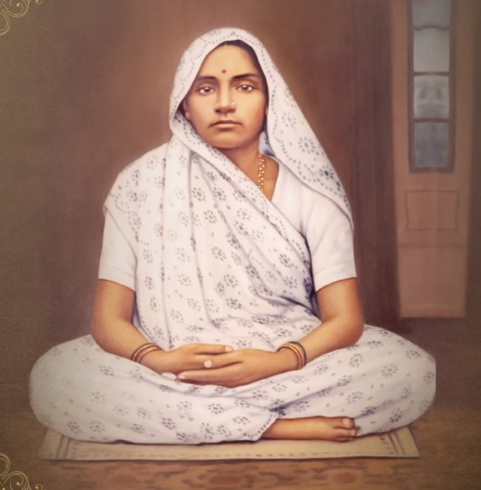

Jhabakben belonged to a respected Sthanakvasi Jain family of Morbi — the family of the four Jagjivan brothers. Her father, Shri Popatlalbhai Mehta, was the eldest of these four brothers. Popatlalbhai's brothers included Shri Revashankarbhai Jagjivan (who later became Param Krupalu Dev's business partner) and Dr. Pranjivandas Mehta (the Chief Medical Officer of Idar State, who introduced Param Krupalu Dev and Gandhiji).
Contents Hide
Smt. Jhabakben

Smt. Jhabakben
| Smt. Jhabakben | |
|---|---|
| Also known as | Jhabakbai, Jhabakba |
| Relation | Param Krupalu Dev's wife |
| Father | Shri Popatlalbhai Mehta |
| Marriage | Maha Sud 12, V.S. 1944, in Morbi |
| Passed away | V.S. 1969 |
| Family | Sthanakvasi Jain family; Jagjivan brothers of Morbi |
| Significance | Wife of Param Krupalu Dev; after His passing, spent life in solitude and spiritual practice |
Smt. Jhabakben (also called Jhabakbai or Jhabakba) was the wife of Shrimad Rajchandra. She was the daughter of Shri Popatlalbhai Mehta, the eldest of the Jagjivan brothers of Morbi. She married Param Krupalu Dev on Maha Sud 12, V.S. 1944 (1888 A.D.) in Morbi. After Param Krupalu Dev's passing, she spent her time in solitude, repeating and reflecting upon what Param Krupalu Dev had given her. She passed away in V.S. 1969.
Background
Marriage with Param Krupalu Dev
Param Krupalu Dev married Jhabakben at the age of 20 on Maha Sud 12 (Baras) of V.S. 1944 (1888 A.D.) in Morbi. The Jagjivan family had come to know of Param Krupalu Dev through His avdhan performances in Morbi and had wished that their eldest brother's daughter should be married to Him, recognising Him as a great soul — learned and extraordinarily talented.
By this time, Param Krupalu Dev had become a celebrated personality in Gujarat, and the family had received even better offers for His marriage. However, Param Krupalu Dev chose this alliance, saying: "Purvanu runanu bandh chhe" — meaning He had a karmic account to settle from a previous birth.
Children
Param Krupalu Dev and Jhabakben had four children:
- Shri Chaganbhai (Chagan Shastri) — born V.S. 1946. First son. Had great respect for his father. Suffered fatal tuberculosis and passed away at age 19 in V.S. 1965.
- Javalben — born V.S. 1948. First daughter. Passed away V.S. 2034.
- Kashiben — born V.S. 1950. Second daughter. Died young at age 32.
- Shri Ratilalbhai — born V.S. 1952. Second son. Died young.
After Param Krupalu Dev's passing
After Param Krupalu Dev's passing in Chaitra Sud 14, V.S. 1957, Jhabakben spent her remaining years in solitude and spiritual contemplation. She devoted her time to repeating and reflecting upon the teachings and spiritual practices that Param Krupalu Dev had given her. She passed away in V.S. 1969.